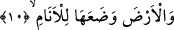
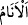

ikinci mânâdadır. Dünya sanatları ve ticaretleri ile ilgili zarar ve hüsran kasdedilmiş
değildir.
Fakir (Bursevî) der ki: Sûre-i celilede göğün yükseltilmesi ve yerin yaratılması
arasındaki bir yerde terazinin zikredilmesinde, göklerin ve yerin dengede ve ayakta
durmasının adâlete bağlı bulunduğuna bir işâret vardır. Daha önce geçen “Gökler ve
yeryüzü adâlet sayesinde dengede ve ayakta durur” hadis-i şerifinde olduğu gibi.
Ayrıca, aklın ölçüsünün ruh ile beden arasında olup itidal içinde olmaları ve
birbirilerine karşı haksızlık ve taşkınlık yapmamalarını sağlamak olduğuna da dikkat
çekilmektedir.
Gerçek adâlet, ifrat ve tefrit denilen ve akıl, âdet ve hukuk yönünden çirkin görülen,
artı ve eksi yönden her iki aşırılığı bilip ortadaki dengeyi korumaktır. Ölçülen şeyler
ise, kişinin kabiliyetine bağlı olan aklın dengeleyip düzenlediği ilim ve amellerdir.
10. Allah, yeri canlılar için yaratmıştır.
Yâni canlıların yararlanıp yaşayabilmeleri için yeryüzünü su üzerine döşenip küre
biçiminde yayılmış olarak yarattı. Kamus’ta da olduğu gibi,
kelimesi “Yerde
bulunan insan, cin ve yaratılmışlar” anlamındadır.
Yeryüzü, üzerinde yatıp sağa sola dönerek istedikleri şekilde kullandıkları döşek gibi
yaratılmıştır.
İbn Abbâs (r.a.), En’âm, “insanlar” anlamındadır, demiştir. Şu şiir de bu mânâya
geldiğini gösterir:
Yüzü bereketli ve uğurlu, onunla
Buluttan yağmur yağdırması için Allah’a duâ edilir.
Onun benzeri ve dengi insanlar arasında yoktur.
Katâde demiştir ki, Enâm, “uyuyan her ruh sâhibi varlığa” denir. Sineğin sessizce
yaptığı tersi anlamındaki “__WORD__/venm” masdarından alındığı da söylenmiştir. Bu âyet-i
kerîmede, beşer/insan toprağının her ırk ve kabileden insanın tabîatına uygun olarak
yaşayabileceği şekilde döşenmiş olduğuna işâret vardır.
Nefis sâhiplerinin yaşaması, bedene âid lezzetleri ve hayvânî (biyolojik) şehvet ve
heveslerinden hakkını alarak devam eder. Mânevî kalp ve gönül ehli kimselerin
yaşaması, gayptan gelen ilhamlar ve kalbe gelen feyizlerledir. Ulvî (yüce) ruh
sâhiplerinin yaşayıp yükselmesi, rûhî tecellîler ve Rabbânî hazırlık, ve gayretlerledir.
Lâhût âlemine mahsus kudsî sırların sâhiplerinin yaşama ve yükselmeleri, Allah’tan
başka ne varsa hepsini yok eden, zat, sıfat ve fiillerinde bir ve tek olan ilâhi zâtın